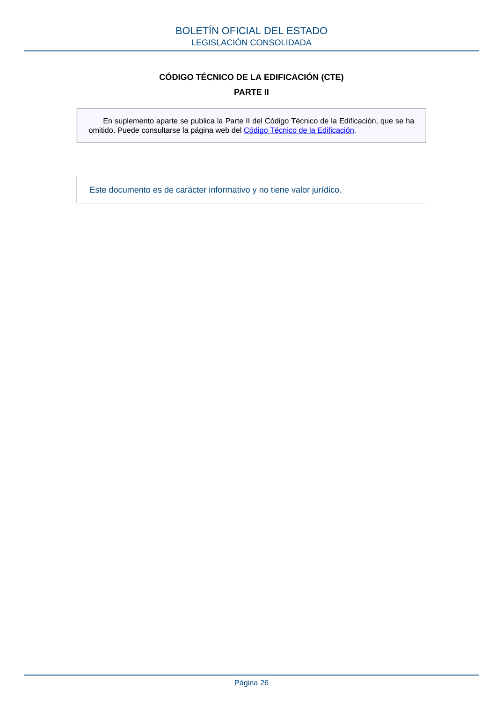

RD-314-2006 · CÓDIGO TÉCNICO DE LA EDIFICACIÓN (CTE). PARTE II · versión 2022-06-15
SHA256: 298090e145f5558aceae49702b2ce132fe8fe8671bd87d650217c6a24bdd65ba · página física 26 de 26 · métodos de encabezado
solo si están cotejados.
Formatos: Markdown · JSON de bloques · PDF p. 26 · imagen PNG
CÓDIGO TÉCNICO DE LA EDIFICACIÓN (CTE) PARTE II En suplemento aparte se publica la Parte II del Código Técnico de la Edificación, que se ha omitido. Puede consultarse la página web del Código Técnico de la Edificación. Este documento es de carácter informativo y no tiene valor jurídico. BOLETÍN OFICIAL DEL ESTADO LEGISLACIÓN CONSOLIDADA Página 26
